2024 National 5 Chemistry marking instructions
Source: Scottish Qualifications Authority (SQA) / Qualifications Scotland. This is a StemInteract HTML companion, not an official HTML edition. Selectable text is supplied alongside original page images. Use the images or original PDF for equations, powers, fractions, vector notation, tables and diagrams; text extraction cannot fully preserve mathematical layout.
Jump to a question
PDF page 1
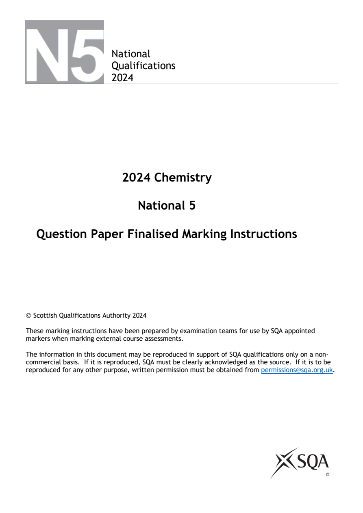
Selectable page text
National
Qualifications
2024
2024 Chemistry
National 5
Question Paper Finalised Marking Instructions
© Scottish Qualifications Authority 2024
These marking instructions have been prepared by examination teams for use by SQA appointed
markers when marking external course assessments.
The information in this document may be reproduced in support of SQA qualifications only on a non-
commercial basis. If it is reproduced, SQA must be clearly acknowledged as the source. If it is to be
reproduced for any other purpose, written permission must be obtained from permissions@sqa.org.uk.PDF page 2
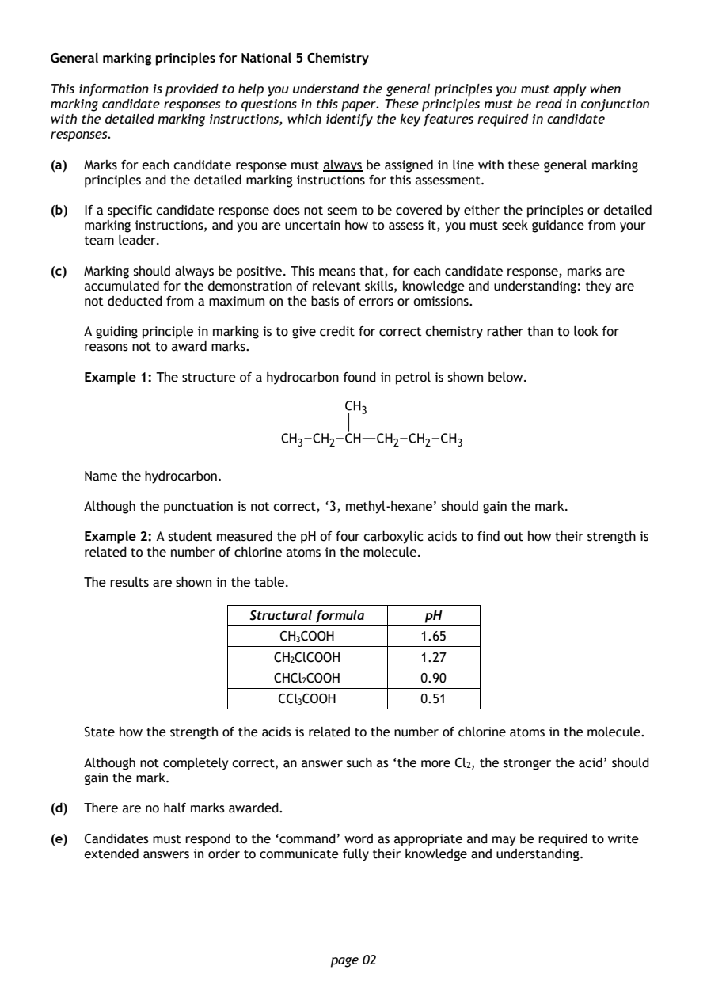
Selectable page text
General marking principles for National 5 Chemistry
This information is provided to help you understand the general principles you must apply when
marking candidate responses to questions in this paper. These principles must be read in conjunction
with the detailed marking instructions, which identify the key features required in candidate
responses.
(a) Marks for each candidate response must always be assigned in line with these general marking
principles and the detailed marking instructions for this assessment.
(b) If a specific candidate response does not seem to be covered by either the principles or detailed
marking instructions, and you are uncertain how to assess it, you must seek guidance from your
team leader.
(c) Marking should always be positive. This means that, for each candidate response, marks are
accumulated for the demonstration of relevant skills, knowledge and understanding: they are
not deducted from a maximum on the basis of errors or omissions.
A guiding principle in marking is to give credit for correct chemistry rather than to look for
reasons not to award marks.
Example 1: The structure of a hydrocarbon found in petrol is shown below.
Name the hydrocarbon.
Although the punctuation is not correct, ‘3, methyl-hexane’ should gain the mark.
Example 2: A student measured the pH of four carboxylic acids to find out how their strength is
related to the number of chlorine atoms in the molecule.
The results are shown in the table.
Structural formula pH
CH₃COOH 1.65
CH₂ClCOOH 1.27
CHCl₂COOH 0.90
CCl₃COOH 0.51
State how the strength of the acids is related to the number of chlorine atoms in the molecule.
Although not completely correct, an answer such as ‘the more Cl₂, the stronger the acid’ should
gain the mark.
(d) There are no half marks awarded.
(e) Candidates must respond to the ‘command’ word as appropriate and may be required to write
extended answers in order to communicate fully their knowledge and understanding.
page 02PDF page 3
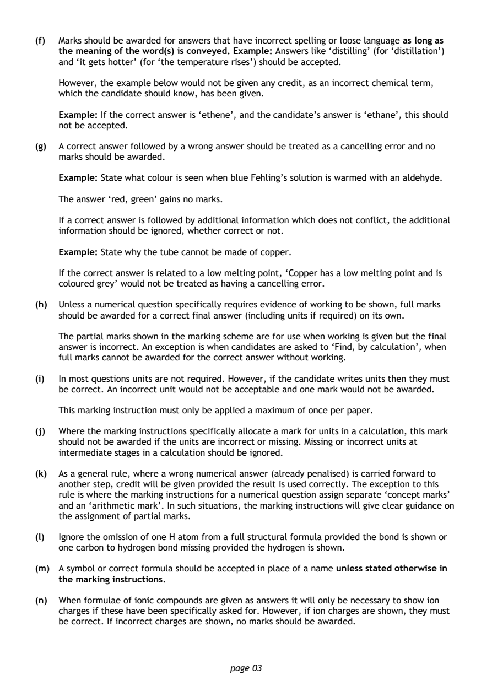
Selectable page text
(f) Marks should be awarded for answers that have incorrect spelling or loose language as long as
the meaning of the word(s) is conveyed. Example: Answers like ‘distilling’ (for ‘distillation’)
and ‘it gets hotter’ (for ‘the temperature rises’) should be accepted.
However, the example below would not be given any credit, as an incorrect chemical term,
which the candidate should know, has been given.
Example: If the correct answer is ‘ethene’, and the candidate’s answer is ‘ethane’, this should
not be accepted.
(g) A correct answer followed by a wrong answer should be treated as a cancelling error and no
marks should be awarded.
Example: State what colour is seen when blue Fehling’s solution is warmed with an aldehyde.
The answer ‘red, green’ gains no marks.
If a correct answer is followed by additional information which does not conflict, the additional
information should be ignored, whether correct or not.
Example: State why the tube cannot be made of copper.
If the correct answer is related to a low melting point, ‘Copper has a low melting point and is
coloured grey’ would not be treated as having a cancelling error.
(h) Unless a numerical question specifically requires evidence of working to be shown, full marks
should be awarded for a correct final answer (including units if required) on its own.
The partial marks shown in the marking scheme are for use when working is given but the final
answer is incorrect. An exception is when candidates are asked to ‘Find, by calculation’, when
full marks cannot be awarded for the correct answer without working.
(i) In most questions units are not required. However, if the candidate writes units then they must
be correct. An incorrect unit would not be acceptable and one mark would not be awarded.
This marking instruction must only be applied a maximum of once per paper.
(j) Where the marking instructions specifically allocate a mark for units in a calculation, this mark
should not be awarded if the units are incorrect or missing. Missing or incorrect units at
intermediate stages in a calculation should be ignored.
(k) As a general rule, where a wrong numerical answer (already penalised) is carried forward to
another step, credit will be given provided the result is used correctly. The exception to this
rule is where the marking instructions for a numerical question assign separate ‘concept marks’
and an ‘arithmetic mark’. In such situations, the marking instructions will give clear guidance on
the assignment of partial marks.
(l) Ignore the omission of one H atom from a full structural formula provided the bond is shown or
one carbon to hydrogen bond missing provided the hydrogen is shown.
(m) A symbol or correct formula should be accepted in place of a name unless stated otherwise in
the marking instructions.
(n) When formulae of ionic compounds are given as answers it will only be necessary to show ion
charges if these have been specifically asked for. However, if ion charges are shown, they must
be correct. If incorrect charges are shown, no marks should be awarded.
page 03PDF page 4
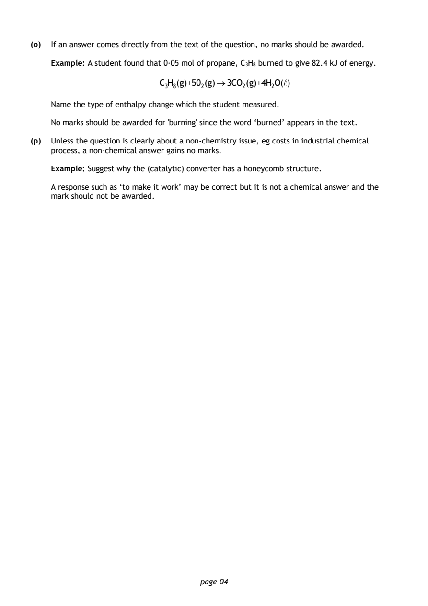
Selectable page text
(o) If an answer comes directly from the text of the question, no marks should be awarded.
Example: A student found that 0·05 mol of propane, C₃H₈ burned to give 82.4 kJ of energy.
C₃H₈(g)+50₂(g)→3CO₂(g)+4H₂O( )
Name the type of enthalpy change which the student measured.
No marks should be awarded for 'burning' since the word ‘burned’ appears in the text.
(p) Unless the question is clearly about a non-chemistry issue, eg costs in industrial chemical
process, a non-chemical answer gains no marks.
Example: Suggest why the (catalytic) converter has a honeycomb structure.
A response such as ‘to make it work’ may be correct but it is not a chemical answer and the
mark should not be awarded.
page 04PDF page 5
Paper 1, Question 1Paper 1, Question 2Paper 1, Question 3Paper 1, Question 4Paper 1, Question 5Paper 1, Question 6Paper 1, Question 7Paper 1, Question 8Paper 1, Question 9Paper 1, Question 10Paper 1, Question 11Paper 1, Question 12Paper 1, Question 13Paper 1, Question 14Paper 1, Question 15Paper 1, Question 16Paper 1, Question 17Paper 1, Question 18Paper 1, Question 19Paper 1, Question 20Paper 1, Question 21Paper 1, Question 22Paper 1, Question 23Paper 1, Question 24Paper 1, Question 25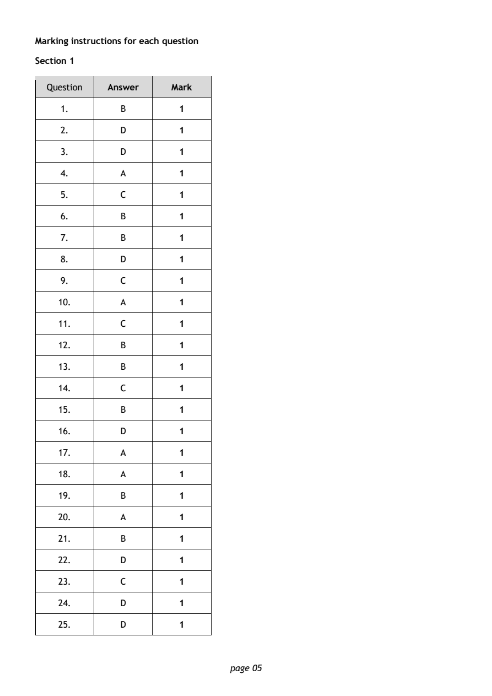
Selectable page text
Marking instructions for each question
Section 1
Question Answer Mark
1. B 1
2. D 1
3. D 1
4. A 1
5. C 1
6. B 1
7. B 1
8. D 1
9. C 1
10. A 1
11. C 1
12. B 1
13. B 1
14. C 1
15. B 1
16. D 1
17. A 1
18. A 1
19. B 1
20. A 1
21. B 1
22. D 1
23. C 1
24. D 1
25. D 1
page 05PDF page 6
Paper 2, Question 1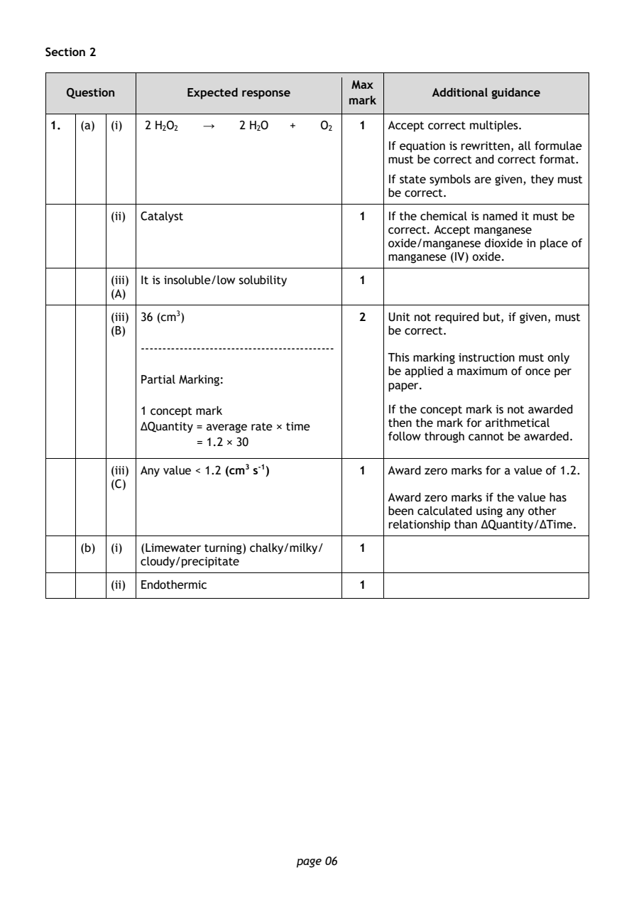
Selectable page text
Section 2
Max
Question Expected response Additional guidance
mark
1. (a) (i) 2 H₂O₂ → 2 H₂O + O₂ 1 Accept correct multiples.
If equation is rewritten, all formulae
must be correct and correct format.
If state symbols are given, they must
be correct.
(ii) Catalyst 1 If the chemical is named it must be
correct. Accept manganese
oxide/manganese dioxide in place of
manganese (IV) oxide.
(iii) It is insoluble/low solubility 1
(A)
(iii) 36 (cm³) 2 Unit not required but, if given, must
(B) be correct.
---------------------------------------------
This marking instruction must only
be applied a maximum of once per
Partial Marking:
paper.
1 concept mark If the concept mark is not awarded
then the mark for arithmetical
ΔQuantity = average rate × time
follow through cannot be awarded.
= 1.2 × 30
(iii) Any value < 1.2 (cm³ s⁻¹) 1 Award zero marks for a value of 1.2.
(C)
Award zero marks if the value has
been calculated using any other
relationship than ΔQuantity/ΔTime.
(b) (i) (Limewater turning) chalky/milky/ 1
cloudy/precipitate
(ii) Endothermic 1
page 06PDF page 7
Paper 2, Question 2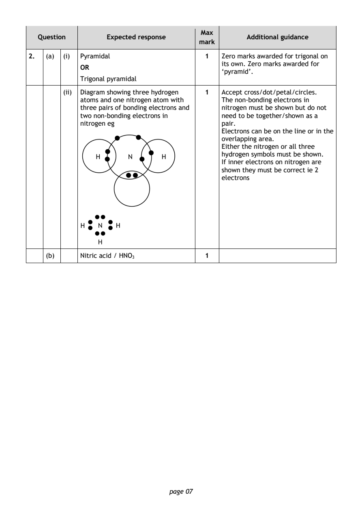
Selectable page text
Max
Question Expected response Additional guidance
mark
2. (a) (i) Pyramidal 1 Zero marks awarded for trigonal on
its own. Zero marks awarded for
OR
‘pyramid’.
Trigonal pyramidal
(ii) Diagram showing three hydrogen 1 Accept cross/dot/petal/circles.
atoms and one nitrogen atom with The non-bonding electrons in
three pairs of bonding electrons and nitrogen must be shown but do not
two non-bonding electrons in need to be together/shown as a
nitrogen eg pair.
Electrons can be on the line or in the
overlapping area.
Either the nitrogen or all three
hydrogen symbols must be shown.
If inner electrons on nitrogen are
shown they must be correct ie 2
electrons
(b) Nitric acid / HNO₃ 1
page 07PDF page 8
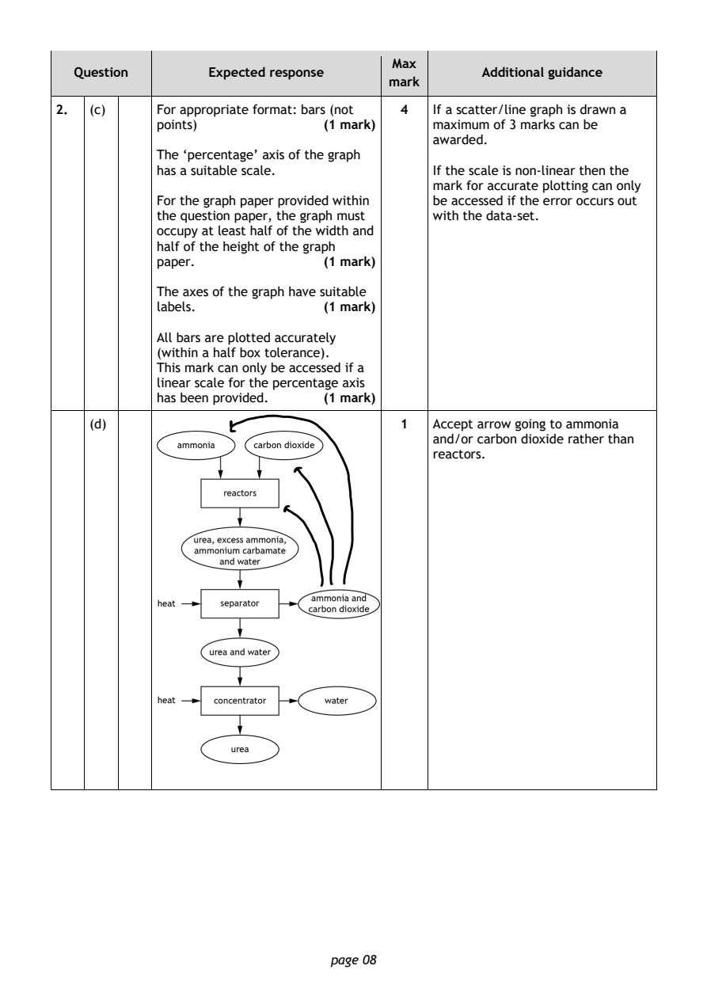
Selectable page text
Max
Question Expected response Additional guidance
mark
2. (c) For appropriate format: bars (not 4 If a scatter/line graph is drawn a
points) (1 mark) maximum of 3 marks can be
awarded.
The ‘percentage’ axis of the graph
has a suitable scale. If the scale is non-linear then the
mark for accurate plotting can only
For the graph paper provided within be accessed if the error occurs out
the question paper, the graph must with the data-set.
occupy at least half of the width and
half of the height of the graph
paper. (1 mark)
The axes of the graph have suitable
labels. (1 mark)
All bars are plotted accurately
(within a half box tolerance).
This mark can only be accessed if a
linear scale for the percentage axis
has been provided. (1 mark)
(d) 1 Accept arrow going to ammonia
and/or carbon dioxide rather than
reactors.
page 08PDF page 9
Paper 2, Question 3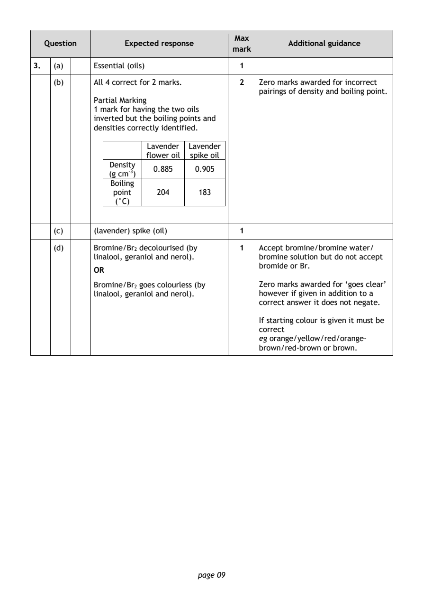
Selectable page text
Max
Question Expected response Additional guidance
mark
3. (a) Essential (oils) 1
(b) All 4 correct for 2 marks. 2 Zero marks awarded for incorrect
pairings of density and boiling point.
Partial Marking
1 mark for having the two oils
inverted but the boiling points and
densities correctly identified.
Lavender Lavender
flower oil spike oil
Density
0.885 0.905
(g cm⁻³)
Boiling
point 204 183
(°C)
(c) (lavender) spike (oil) 1
(d) Bromine/Br₂ decolourised (by 1 Accept bromine/bromine water/
linalool, geraniol and nerol). bromine solution but do not accept
bromide or Br.
OR
Bromine/Br₂ goes colourless (by Zero marks awarded for ‘goes clear’
linalool, geraniol and nerol). however if given in addition to a
correct answer it does not negate.
If starting colour is given it must be
correct
eg orange/yellow/red/orange-
brown/red-brown or brown.
page 09PDF page 10
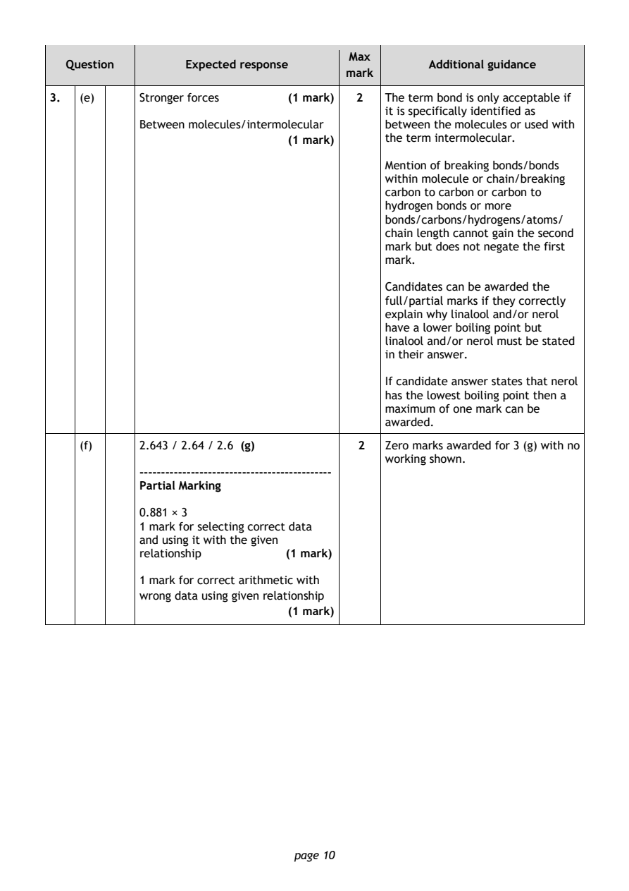
Selectable page text
Max
Question Expected response Additional guidance
mark
3. (e) Stronger forces (1 mark) 2 The term bond is only acceptable if
it is specifically identified as
Between molecules/intermolecular between the molecules or used with
(1 mark) the term intermolecular.
Mention of breaking bonds/bonds
within molecule or chain/breaking
carbon to carbon or carbon to
hydrogen bonds or more
bonds/carbons/hydrogens/atoms/
chain length cannot gain the second
mark but does not negate the first
mark.
Candidates can be awarded the
full/partial marks if they correctly
explain why linalool and/or nerol
have a lower boiling point but
linalool and/or nerol must be stated
in their answer.
If candidate answer states that nerol
has the lowest boiling point then a
maximum of one mark can be
awarded.
(f) 2.643 / 2.64 / 2.6 (g) 2 Zero marks awarded for 3 (g) with no
working shown.
---------------------------------------------
Partial Marking
0.881 × 3
1 mark for selecting correct data
and using it with the given
relationship (1 mark)
1 mark for correct arithmetic with
wrong data using given relationship
(1 mark)
page 10PDF page 11
Paper 2, Question 4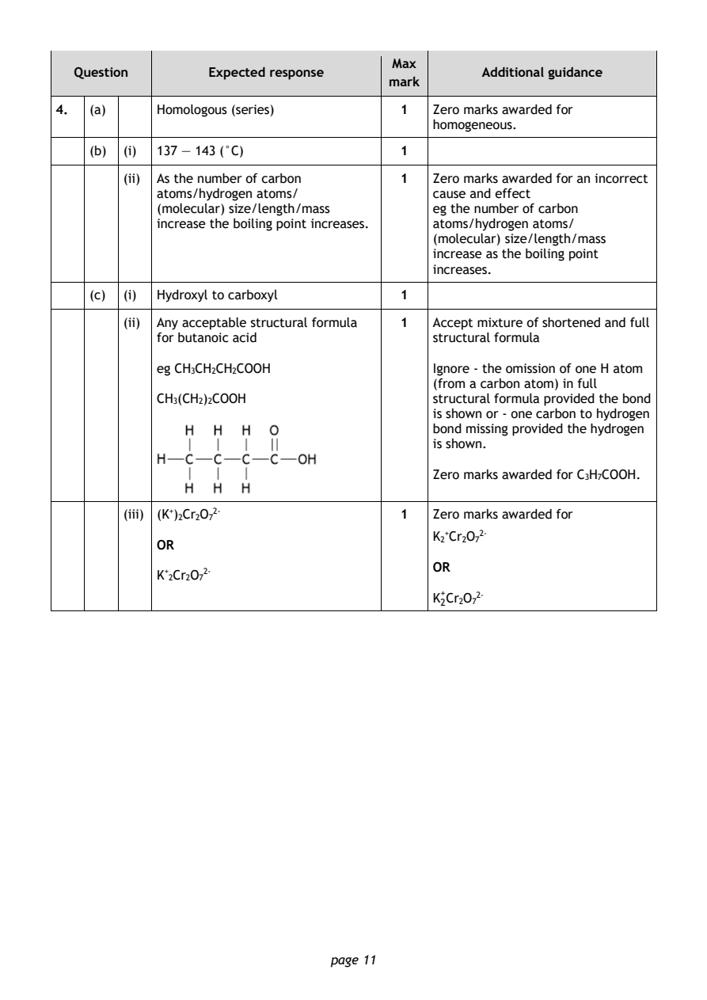
Selectable page text
Max
Question Expected response Additional guidance
mark
4. (a) Homologous (series) 1 Zero marks awarded for
homogeneous.
(b) (i) 137 — 143 (°C) 1
(ii) As the number of carbon 1 Zero marks awarded for an incorrect
atoms/hydrogen atoms/ cause and effect
(molecular) size/length/mass eg the number of carbon
increase the boiling point increases. atoms/hydrogen atoms/
(molecular) size/length/mass
increase as the boiling point
increases.
(c) (i) Hydroxyl to carboxyl 1
(ii) Any acceptable structural formula 1 Accept mixture of shortened and full
for butanoic acid structural formula
eg CH₃CH₂CH₂COOH Ignore - the omission of one H atom
(from a carbon atom) in full
CH₃(CH₂) COOH structural formula provided the bond
2
is shown or - one carbon to hydrogen
bond missing provided the hydrogen
is shown.
Zero marks awarded for C₃H₇COOH.
(iii) (K⁺) Cr₂O₇²⁻ 1 Zero marks awarded for
2
K₂⁺Cr₂O₇²⁻
OR
OR
K⁺ Cr₂O₇²⁻
2
K₂⁺Cr₂O₇²⁻
page 11PDF page 12
Paper 2, Question 5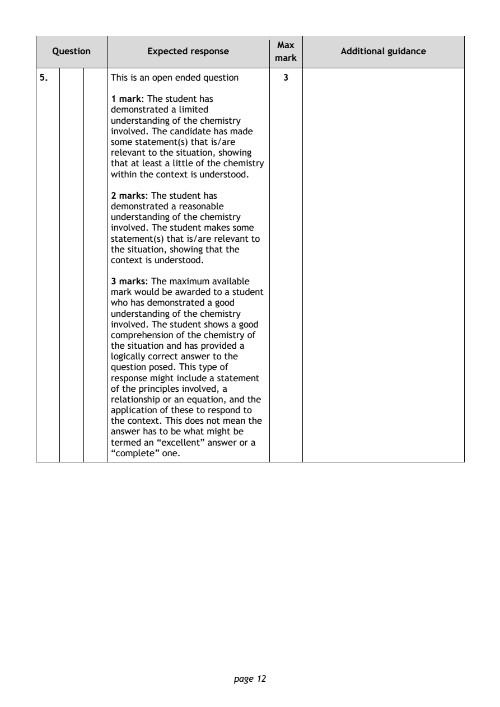
Selectable page text
Max
Question Expected response Additional guidance
mark
5. This is an open ended question 3
1 mark: The student has
demonstrated a limited
understanding of the chemistry
involved. The candidate has made
some statement(s) that is/are
relevant to the situation, showing
that at least a little of the chemistry
within the context is understood.
2 marks: The student has
demonstrated a reasonable
understanding of the chemistry
involved. The student makes some
statement(s) that is/are relevant to
the situation, showing that the
context is understood.
3 marks: The maximum available
mark would be awarded to a student
who has demonstrated a good
understanding of the chemistry
involved. The student shows a good
comprehension of the chemistry of
the situation and has provided a
logically correct answer to the
question posed. This type of
response might include a statement
of the principles involved, a
relationship or an equation, and the
application of these to respond to
the context. This does not mean the
answer has to be what might be
termed an “excellent” answer or a
“complete” one.
page 12PDF page 13
Paper 2, Question 6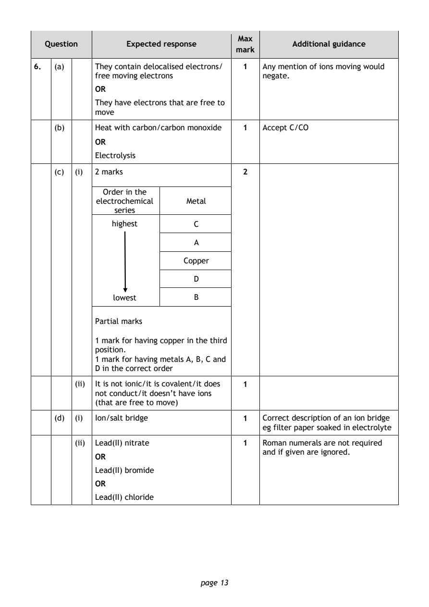
Selectable page text
Max
Question Expected response Additional guidance
mark
6. (a) They contain delocalised electrons/ 1 Any mention of ions moving would
free moving electrons negate.
OR
They have electrons that are free to
move
(b) Heat with carbon/carbon monoxide 1 Accept C/CO
OR
Electrolysis
(c) (i) 2 marks 2
Order in the
electrochemical Metal
series
highest C
A
Copper
D
lowest B
Partial marks
1 mark for having copper in the third
position.
1 mark for having metals A, B, C and
D in the correct order
(ii) It is not ionic/it is covalent/it does 1
not conduct/it doesn’t have ions
(that are free to move)
(d) (i) Ion/salt bridge 1 Correct description of an ion bridge
eg filter paper soaked in electrolyte
(ii) Lead(II) nitrate 1 Roman numerals are not required
and if given are ignored.
OR
Lead(II) bromide
OR
Lead(II) chloride
page 13PDF page 14
Paper 2, Question 7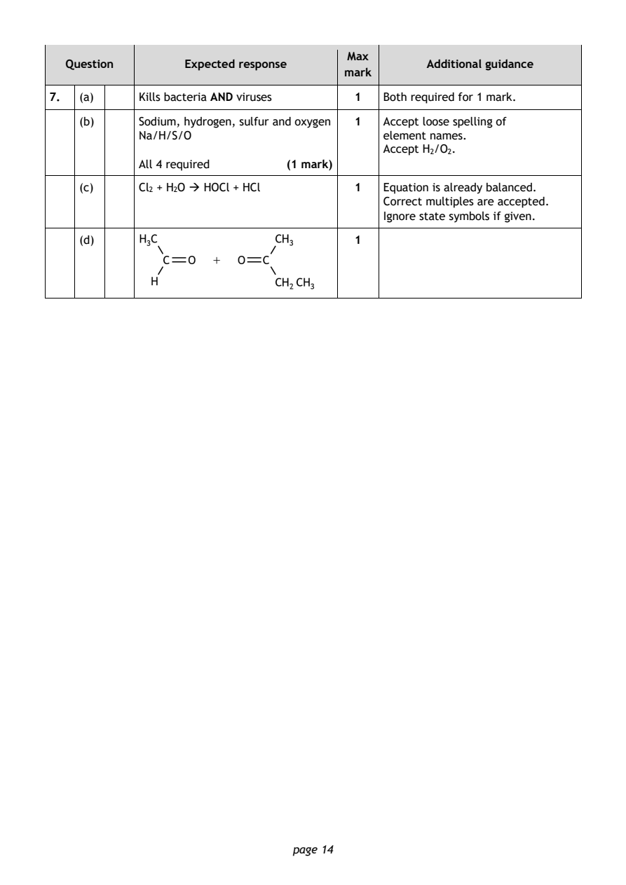
Selectable page text
Max
Question Expected response Additional guidance
mark
7. (a) Kills bacteria AND viruses 1 Both required for 1 mark.
(b) Sodium, hydrogen, sulfur and oxygen 1 Accept loose spelling of
Na/H/S/O element names.
Accept H₂/O₂.
All 4 required (1 mark)
(c) Cl₂ + H₂O → HOCl + HCl 1 Equation is already balanced.
Correct multiples are accepted.
Ignore state symbols if given.
(d) 1
page 14PDF page 15
Paper 2, Question 8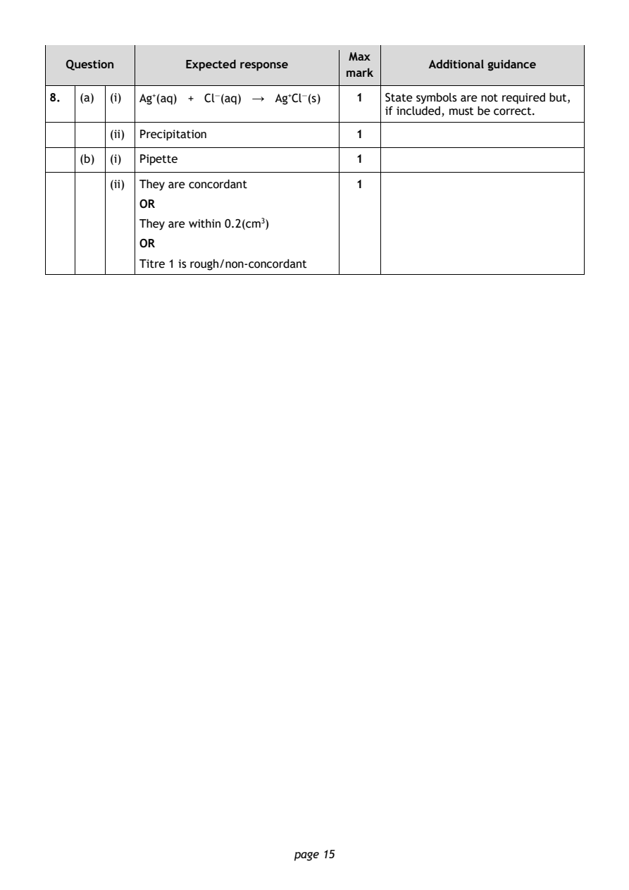
Selectable page text
Max
Question Expected response Additional guidance
mark
8. (a) (i) Ag⁺(aq) + Cl^{—}(aq) → Ag⁺Cl^{—}(s) 1 State symbols are not required but,
if included, must be correct.
(ii) Precipitation 1
(b) (i) Pipette 1
(ii) They are concordant 1
OR
They are within 0.2(cm³)
OR
Titre 1 is rough/non-concordant
page 15PDF page 16
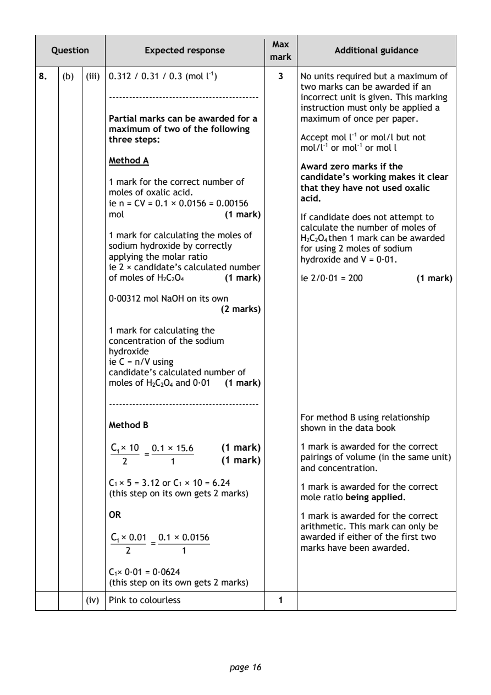
Selectable page text
Max
Question Expected response Additional guidance
mark
8. (b) (iii) 0.312 / 0.31 / 0.3 (mol l⁻¹) 3 No units required but a maximum of
two marks can be awarded if an
--------------------------------------------- incorrect unit is given. This marking
instruction must only be applied a
Partial marks can be awarded for a maximum of once per paper.
maximum of two of the following
three steps: Accept mol l⁻¹ or mol/l but not
mol/l⁻¹ or mol⁻¹ or mol l
Method A
Award zero marks if the
candidate’s working makes it clear
1 mark for the correct number of
that they have not used oxalic
moles of oxalic acid.
acid.
ie n = CV = 0.1 × 0.0156 = 0.00156
mol (1 mark)
If candidate does not attempt to
calculate the number of moles of
1 mark for calculating the moles of
H₂C₂O₄then 1 mark can be awarded
sodium hydroxide by correctly
for using 2 moles of sodium
applying the molar ratio
hydroxide and V = 0·01.
ie 2 × candidate’s calculated number
of moles of H₂C₂O₄ (1 mark) ie 2/0·01 = 200 (1 mark)
0·00312 mol NaOH on its own
(2 marks)
1 mark for calculating the
concentration of the sodium
hydroxide
ie C = n/V using
candidate’s calculated number of
moles of H₂C₂O₄ and 0·01 (1 mark)
---------------------------------------------
For method B using relationship
Method B
shown in the data book
C₁× 10 0.1 × 15.6 (1 mark) 1 mark is awarded for the correct
=
pairings of volume (in the same unit)
2 1 (1 mark)
and concentration.
C × 5 = 3.12 or C × 10 = 6.24
1 1 mark is awarded for the correct
(this step on its o¹wn gets 2 marks)
mole ratio being applied.
OR 1 mark is awarded for the correct
arithmetic. This mark can only be
C₁× 0.01 0.1 × 0.0156 awarded if either of the first two
=
marks have been awarded.
2 1
C₁× 0·01 = 0·0624
(this step on its own gets 2 marks)
(iv) Pink to colourless 1
page 16PDF page 17
Paper 2, Question 9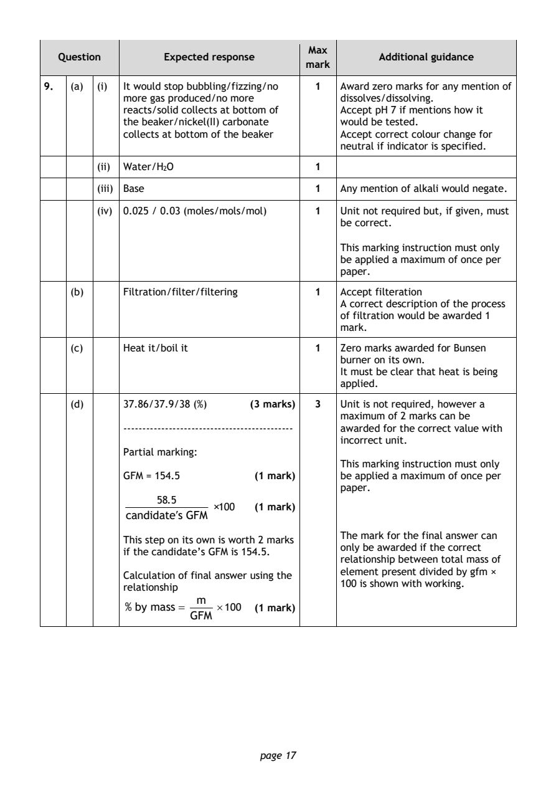
Selectable page text
Max
Question Expected response Additional guidance
mark
9. (a) (i) It would stop bubbling/fizzing/no 1 Award zero marks for any mention of
more gas produced/no more dissolves/dissolving.
reacts/solid collects at bottom of Accept pH 7 if mentions how it
the beaker/nickel(II) carbonate would be tested.
collects at bottom of the beaker Accept correct colour change for
neutral if indicator is specified.
(ii) Water/H₂O 1
(iii) Base 1 Any mention of alkali would negate.
(iv) 0.025 / 0.03 (moles/mols/mol) 1 Unit not required but, if given, must
be correct.
This marking instruction must only
be applied a maximum of once per
paper.
(b) Filtration/filter/filtering 1 Accept filteration
A correct description of the process
of filtration would be awarded 1
mark.
(c) Heat it/boil it 1 Zero marks awarded for Bunsen
burner on its own.
It must be clear that heat is being
applied.
(d) 37.86/37.9/38 (%) (3 marks) 3 Unit is not required, however a
maximum of 2 marks can be
--------------------------------------------- awarded for the correct value with
incorrect unit.
Partial marking:
This marking instruction must only
GFM = 154.5 (1 mark) be applied a maximum of once per
paper.
58.5
×100 (1 mark)
candidate′s GFM
The mark for the final answer can
This step on its own is worth 2 marks
only be awarded if the correct
if the candidate’s GFM is 154.5.
relationship between total mass of
element present divided by gfm ×
Calculation of final answer using the
100 is shown with working.
relationship
m
% by mass = ×1 00 (1 mark)
GFM
page 17PDF page 18
Paper 2, Question 10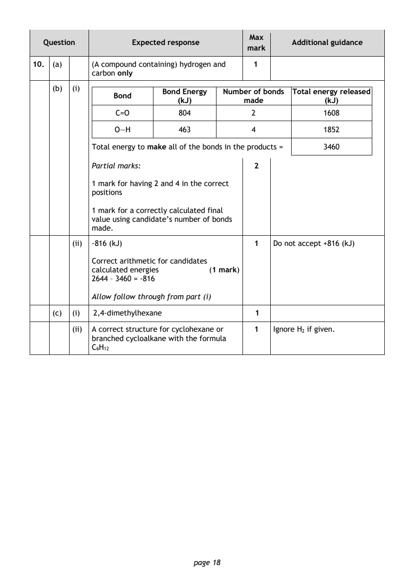
Selectable page text
Max
Question Expected response Additional guidance
mark
10. (a) (A compound containing) hydrogen and 1
carbon only
(b) (i)
Bond Energy Number of bonds Total energy released
Bond
(kJ) made (kJ)
C=O 804 2 1608
O—H 463 4 1852
Total energy to make all of the bonds in the products = 3460
Partial marks: 2
1 mark for having 2 and 4 in the correct
positions
1 mark for a correctly calculated final
value using candidate’s number of bonds
made.
(ii) -816 (kJ) 1 Do not accept +816 (kJ)
Correct arithmetic for candidates
calculated energies (1 mark)
2644 – 3460 = -816
Allow follow through from part (i)
(c) (i) 2,4-dimethylhexane 1
(ii) A correct structure for cyclohexane or 1 Ignore H₂ if given.
branched cycloalkane with the formula
C₆H₁
2
page 18PDF page 19
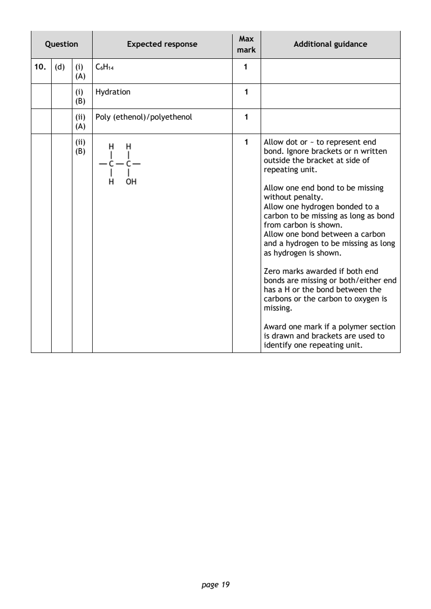
Selectable page text
Max
Question Expected response Additional guidance
mark
10. (d) (i) C₆H₁ 1
4
(A)
(i) Hydration 1
(B)
(ii) Poly (ethenol)/polyethenol 1
(A)
(ii) 1 Allow dot or ~ to represent end
(B) bond. Ignore brackets or n written
outside the bracket at side of
repeating unit.
Allow one end bond to be missing
without penalty.
Allow one hydrogen bonded to a
carbon to be missing as long as bond
from carbon is shown.
Allow one bond between a carbon
and a hydrogen to be missing as long
as hydrogen is shown.
Zero marks awarded if both end
bonds are missing or both/either end
has a H or the bond between the
carbons or the carbon to oxygen is
missing.
Award one mark if a polymer section
is drawn and brackets are used to
identify one repeating unit.
page 19PDF page 20
Paper 2, Question 11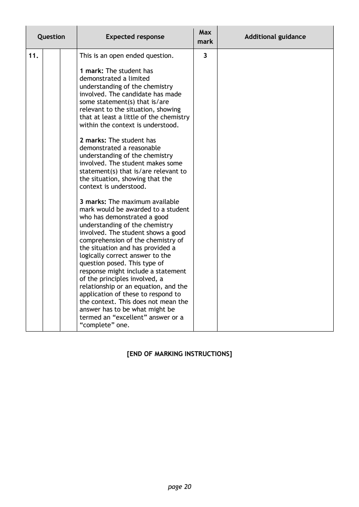
Selectable page text
Max
Question Expected response Additional guidance
mark
11. This is an open ended question. 3
1 mark: The student has
demonstrated a limited
understanding of the chemistry
involved. The candidate has made
some statement(s) that is/are
relevant to the situation, showing
that at least a little of the chemistry
within the context is understood.
2 marks: The student has
demonstrated a reasonable
understanding of the chemistry
involved. The student makes some
statement(s) that is/are relevant to
the situation, showing that the
context is understood.
3 marks: The maximum available
mark would be awarded to a student
who has demonstrated a good
understanding of the chemistry
involved. The student shows a good
comprehension of the chemistry of
the situation and has provided a
logically correct answer to the
question posed. This type of
response might include a statement
of the principles involved, a
relationship or an equation, and the
application of these to respond to
the context. This does not mean the
answer has to be what might be
termed an “excellent” answer or a
“complete” one.
[END OF MARKING INSTRUCTIONS]
page 20